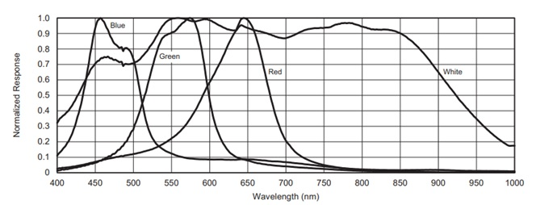

Neuron Simulator

These neuron simulators output nerve impulses based on the type of stimulation they received. Intuitively, the eye was stimulated by light and the ear by sound. I designed all components in this including the PCB, enclosure, and firmware. The PCB is the same for both variants.
Eye Simulator
The eye has a total of seven neurons. Four neurons simulate rods and the other three simulate cones. Each cone has sensitivity to a specific color. The red cone is most sensitive in the 600nm – 675nm region. The blue cone is most sensitive in the 440nm-510nm region. The green is most sensitive in the 525nm-590nm region. A graph of the response of each cone is shown below. The response of the white color in this graph is not implemented.
Every cone neuron has a threshold that activates a pulse if the firing delay period has passed. The firing delay determines the maximum frequency of impulses when the cone neuron is saturated. The ratio between the strongest cone neuron and every other cone neuron define the length of the delay period multiplied by 5. Mathematically the delay T for every cone neuron i is expressed as the ratio of potential multiplied by 5:
Delay = 5*(P0 / Pi)TiVariance is introduced to both amplitude and width of the neuron impulse. The mean values and variance for each neuron are shown in the table below.
| Type/Color | Mean Width | Absolute Width Variance +/-200uSec | Mean Absolute Amplitude (Volts) | Absolute Amplitude Variance +/-5% |
|---|---|---|---|---|
| Rod/White | 2400 uSec | 400uSec | 1.853 V | 185mV |
| Rod/White | 3200 uSec | 400uSec | 2.162 V | 216mV |
| Rod/White | 3550 uSec | 400uSec | 2.780 V | 278mV |
| Rod/White | 4250 uSec | 400uSec | 2.470 V | 247mV |
| Cone/Red | 4700 uSec | 400uSec | 0.926 V | 93mV |
| Cone/Green | 5400 uSec | 400uSec | 1.236 V | 124mV |
| Cone/Blue | 6200 uSec | 400uSec | 1.544 V | 154mV |
Ear Simulator
There are seven neurons that are each activated by different frequencies of sound. Each neuron has a different amplitude that is +/- 5% of the mean amplitude. The bands are 125Hz-250Hz, 250Hz-500Hz, 500Hz-1kHz, 1kHz-2kHz, 2kHz-4kHz, 4kHz-8kHz, and 8kHz-16kHz.
Each neuron has an action potential threshold that activates a pulse if the firing delay period has passed. The firing delay determines the maximum frequency of impulses when the neuron is saturated. The ratio between the strongest neuron and every other neuron define the length of the delay period multiplied by an order of magnitude. Mathematically the delay T for every neuron i is expressed as the ratio of potential multiplied by an order of magnitude:
Delay = 10*(P0 / Pi)TiFor example, if two neurons have potentials that are above the activation threshold but one neuron is twice as strong as the other so that P1 = 200 and P0 = 400 than the delay period with respect to the first neuron would be: 10*(400/200)*Ti = 20Ti. So if both neurons were saturated for a period of time we would expect to see twenty times more occurrences of the neuron with the higher potential.
The amplitude of different frequencies of sound are determined using an FFT. The length of the FFT was chosen to be small enough that there isn’t too much of a delay from when the sound is produced to when the neuron is activated. The FFT bin is 125Hz which reduces resolution in the lower band where there is only a difference of 125Hz. I've mapped the relative sensitivity of each neuron to the average point in the band according to the ISO 226:2003 Normal equal-loudness level contour at 60 phon. If the amplitude of the sound is loud enough, sub harmonics can activate other neurons at the firing frequency discussed above. I'm outputting data to the TA at 10kHz so a sample rate of 20kHz is suitable to capture the data.
Variance is introduced to both amplitude and width of the neuron impulse. The mean values and variance for each neuron are shown in the table below.
| Band | Mean Width | Absolute Width Variance +/-200uSec | Mean Absolute Amplitude (Volts) | Absolute Amplitude Variance +/-5% |
|---|---|---|---|---|
| 125Hz-250Hz | 1150 uSec | 400uSec | 1.853 V | 185mV |
| 250Hz-500Hz | 1350 uSec | 400uSec | 2.162 V | 216mV |
| 500Hz-1kHz | 1400 uSec | 400uSec | 2.780 V | 278mV |
| 1kHz-2kHz | 1850 uSec | 400uSec | 2.470 V | 247mV |
| 2kHz-4kHz | 2300 uSec | 400uSec | 0.926 V | 93mV |
| 4kHz-8kHz | 2800 uSec | 400uSec | 1.236 V | 124mV |
| 8kHz-16kHz | 4550 uSec | 400uSec | 1.544 V | 154mV |